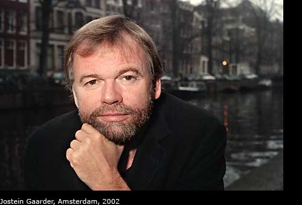

Autore: Jostein Gaarder
Editore: Longanesi
Pagine: 288
Genere: Narrativa
Anno Pubblicazione: 2016
Sessantenne erudito e solitario, Jakop è un ex ricercatore dell'università di Oslo, studioso di linguistica.
Non ha figli né parenti e ha una moglie che lo ha lasciato ma con la quale ha continuato a vedersi a lungo per il semplice fatto che condividevano una Toyota Corolla.
Ha un solo amico, Pelle, che forse non è del tutto estraneo ai fatti che hanno segnato la fine del suo matrimonio.
Jakop è un uomo solitario ma non si sente mai solo, perché si tiene occupato con un'attività che gli riempie le giornate e la vita: ama partecipare ai funerali, mischiarsi tra la folla degli amici e dei parenti e raccontare aneddoti e ricordi sulla vita del defunto che commuovono le persone presenti.
Finché un giorno, a uno dei tanti funerali cui prende parte, Jakop conosce Agnes...
Un fil rouge lega Jakop ad Agnes. Inestricabilmente.
Un filo che si dipana nell’arco di 12 anni, anche se a ben vedere potremmo farlo srotolare già dagli anni Settanta.
Nel mezzo una vita – e che vita! Piena di incontri, di persone, di località del Nord Europa in cui Jakop ci trascina, curiosi di sentire le sue storie.
E che storie! Il mondo norreno, l’incrociarsi delle lingue più antiche.
Per chi non ha familiarità con questo mondo, basterebbe pensare anche solo a Tolkien ed alla sua Cosmogonia!
“Le lingue sono connesse tra loro. Sono come una grande famiglia, o una famiglia allargata. Posso sentirmi onorato di appartenere a questa imponente famiglia”.
Ecco l’elemento scatenante: la famiglia.
E non è forse all’apice delle priorità per tutti noi?
Il sentirsi parte di una unità, accettati e compresi.
Il voler incontrare un essere a noi affine per costruire insieme una famiglia, che sia la continuazione di quella originaria da cui siamo venuti.
Una partenza, uno scopo di continuità ed infine un punto fermo che è anche un arrivo.
E per taluni una nuova partenza.
Non è in questo che consiste e risiede il tutto dell’essere umano?
E se questa famiglia latita?
Sia in origine, che nel prosieguo del nostro passaggio sulla Terra?
Ognuno si arrangia come può in questa vita, ma lo scrittore Jostein Gaarder fornisce a Jakop uno strumento che gli cambierà la vita: un amico, Pelle – e l’amore per il complesso mondo della linguistica e della glottologia, di cui infarcirà buona parte delle sue riflessioni e conversazioni.
Quasi uno scudo di difesa dal mondo esterno.
La vicenda è in sé breve nel percorso presente: inizia a Gotland a Maggio 2013 e si conclude nelle Lofoten a Luglio 2013. Una manciata di mesi.
Ma nel mezzo una valanga di ricordi, che come detto abbracciano sostanzialmente 12 anni – e che il protagonista mette in ordine in una lettera che vuole spedire a Agnes.
Ma che forse è più una scusa che Jakop usa per riordinare i propri ricordi, le proprie storie, la propria vita … fino a dar loro il giusto senso.
Accanto a lui sfilano in questi 12 anni tanti personaggi, la maggior parte appartenenti alla famiglia Lundin, il cui capostipite Erik, insegnante di Jakop, si spegne nel 2001 a Oslo. Ed ecco l’occasione di Jakop: partecipare al funerale e così incontrare la famiglia del Professore.
Un curioso rituale che Jakop aveva già iniziato e che continuerà per molti anni.
Cerimonie funebri e veglie commemorative dove anche noi entreremo insieme al protagonista, che si narra in prima persona, fino a capire la complessità di questa figura solitaria, con le tristi seppur amorevoli cortesie che Jakop dedica ai parenti dei defunti.
E alfine conosceremo anche Pelle, il misterioso amico d’infanzia di Jakop – e l’uomo moro e vestito di scuro, che tante volte Jakop incontrerà ai diversi funerali.
E Agnes, per la quale Jakop sente un’istintiva e subitanea attrazione e per la quale intraprende il viaggio nella memoria, che ci permetterà di conoscere quest’uomo che, con le sue idiosincrasie, ci accompagnerà per mano a scoprire i misteri più profondi dell’essere umano, per cercare di rispondere agli interrogativi sul significato dell’esistenza.
Come il protagonista di questo erudito romanzo, narrato interamente in prima persona,
anch’io non ho voluto seguire una linea precisa e retta nel presentarvi questo libro.
Perché proprio Jostein Gaarder ci invita a scoprire poco per volta ed in modo non sequenziale la realtà della solitudine, del lutto e della meraviglia delle parole antiche da cui tutto il linguaggio odierno deriva. Un fascino che non può lasciare indifferenti, in un senso o nell’altro, le persone che vengono a contatto con Jakop ed il suo amico Pelle e può lasciare sconcertati e spaventati i lettori che si immergono in quest’opera.
 L'AUTORE - Jostein Gaarder (Oslo, 8 agosto 1952) è uno scrittore norvegese, che ha raggiunto la fama internazionale con il romanzo filosofico Il mondo di Sofia.
Gaarder ha studiato filosofia, teologia e letteratura. È stato professore di filosofia per dieci anni prima di dedicarsi alla professione di scrittore. Vive a Oslo con la moglie e i due figli.
Il suo primo libro è stato pubblicato nel 1986, divenendo ben presto uno dei più noti autori del suo paese, ma il successo internazionale è arrivato agli inizi degli anni novanta con il romanzo Il mondo di Sofia. L'opera, pubblicata in Norvegia nel 1991, è stata tradotta in una quarantina di lingue; in Italia è stata pubblicata nel 1994, ed ha vinto il Premio Bancarella nel 1995.
Se siete lettori appassionati visitate questo blog:
librodopolibro.com"